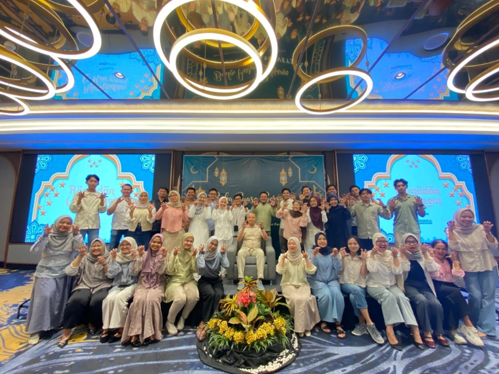
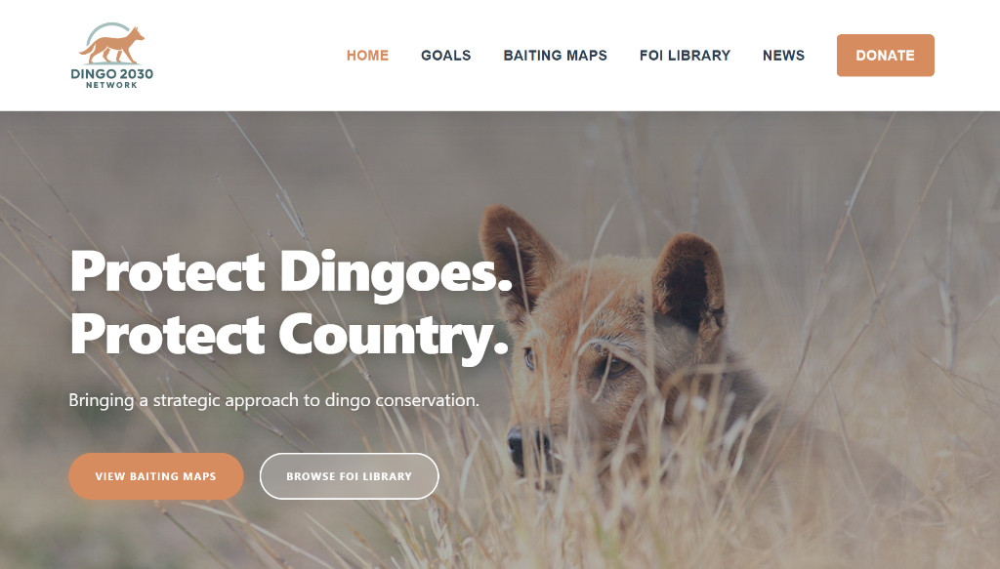

Lulusan Pendidikan Geografi dari Universitas Pendidikan Indonesia dengan spesialisasi Sistem Informasi Geografis (SIG), Data Geospasial, dan Penginderaan Jauh. Tersertifikasi BNSP sebagai Teknisi Penginderaan Jauh. Memiliki pemahaman kuat dalam data spasial, lingkungan & ekologi, kebencanaan, dan survei. Berkomitmen untuk terus belajar dan menerapkan keahlian pada proyek berdampak. Geography Education graduate from Universitas Pendidikan Indonesia specializing in Geographic Information Systems (GIS), Geospatial Data, and Remote Sensing. BNSP Certified Remote Sensing Technician. Strong understanding of spatial data, environment & ecology, disaster management, and surveying. Committed to learning and applying skills to impactful projects.
Spesialisasi dalam GIS Analyst, GIS Specialist, Penginderaan Jauh & Ekologi Lingkungan, serta Manajemen Bencana. Specialized in GIS Analysis, GIS Development, Remote Sensing & Environmental Ecology, and Disaster Management.
Pengolahan & analisis data spasial end-to-end. Berpengalaman mendigitasi tutupan lahan & bangunan kawasan Hilir Citarum (12.000 ha skala 1:5.000), memutakhirkan Peta Topografi (RBI), delineasi & inventarisasi bidang tanah ROW SUTT, serta validasi lapangan dengan akurasi 98%. End-to-end spatial data processing & analysis. Experienced in land cover & building digitization (12,000 ha at 1:5,000 scale), Topographic Map (RBI) updates, land parcel delineation & inventory (ROW SUTT), and ground-truth validation with 98% accuracy.
Otomatisasi alur data spasial menggunakan Python untuk ekstraksi & standardisasi batas wilayah, geocoding (Nominatim & G-NAF), georeferencing presisi tinggi (RMS Error 0,000214), pengembangan peta dasar tematik, dan visualisasi WebGIS interaktif. Automating spatial workflows using Python for boundary extraction & standardization, geocoding (Nominatim & G-NAF), high-precision georeferencing (RMS Error 0.000214), thematic basemap creation, and interactive WebGIS development.
Tersertifikasi BNSP sebagai Teknisi Penginderaan Jauh. Mengolah citra satelit & drone untuk pemutakhiran tutupan lahan, pemetaan ekologi/konservasi satwa liar (intensitas penggembalaan domba & predasi dingo di Australia), serta analisis lingkungan. BNSP Certified Remote Sensing Technician. Processing satellite & drone imagery for land cover update, ecological/wildlife conservation mapping (sheep grazing intensity & dingo predation modeling in Australia), and environmental spatial analysis.
Analisis kerentanan, bahaya, dan kapasitas risiko bencana (Tsunami, Banjir, Longsor), analisis geologi/geomorfologi, pemodelan rute evakuasi & lokasi shelter, serta pengukuran area lapangan presisi tinggi menggunakan instrumen survei terestrial & drone. Spatial hazard, vulnerability, and capacity risk assessment (Tsunami, Flood, Landslide), geological/geomorphological analysis, multi-factor evacuation route & shelter modeling, and high-precision field survey measurements.
Delineasi dan Inventarisasi Bidang Tanah: Manajemen data spasial
end-to-end, termasuk delineasi dan inventarisasi kepemilikan lahan ROW SUTT 150 Kv KEK Kendal
berdasarkan
data Stake Out lapangan.
Visualisasi Data: Memvisualisasikan hasil pengolahan
data
bidang tanah untuk keperluan proyek ROW.
Land Delineation and Inventory: End-to-end spatial data management,
delineating and inventorying land ownership for ROW SUTT 150 Kv KEK Kendal based on field Stake Out
data.
Data Visualization: Visualizing processed land parcel data for the ROW
project.

Visualisasi WebGIS: Berkontribusi mengembangkan WebGIS Dingo
Baiting
Maps 2030 untuk memvisualisasikan data pengendalian satwa liar Anjing Dingo di New South Wales dan
Victoria,
Australia.
Otomatisasi Data Python: Membangun alur otomatisasi data spasial
menggunakan Python untuk menyiapkan dataset terstruktur demi kemudahan analisis dan pengembangan
WebGIS.
WebGIS Visualization: Contributed to the WebGIS Dingo Baiting Maps
2030, visualizing wildlife data in NSW and Victoria, Australia.
Python Data
Automation: Built automated spatial data workflows using Python to prepare structured
datasets,
supporting analysis and WebGIS deployment.

Pemutakhiran Data Citarum Hilir: Digitasi onscreen, topology check,
pembaruan toponimi, dan ground truthing kawasan seluas 12.000 hektar (Peta Tutupan Lahan, Peta
Survei).
Analisis Kepadatan Bangunan: Analisis spasial kepadatan bangunan dalam
kawasan Citarum Hilir.
Citarum Hilir Data Update: Onscreen digitizing, topology checks,
toponymy updates, and ground truthing for a 12,000-hectare area (Land Cover Maps, Survey
Maps).
Building Density Analysis: Spatial analysis of building density in the
Citarum Hilir region.
Tertarik dengan keahlian pemetaan dan pengolahan data keruangan saya? Silakan hubungi saya melalui email atau platform profesional lainnya. Interested in my mapping and spatial data processing expertise? Feel free to contact me via email or other professional platforms.